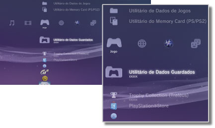

Jogo > Categoria de Jogo
Categoria de Jogo
Os ícones seguintes são apresentados no menu  (Jogo). Os ícones apresentados variam consoante as condições de utilização.
(Jogo). Os ícones apresentados variam consoante as condições de utilização.

 |
PlayStation®Store | Visualizar informações da PlayStation®Store. |
|---|---|---|
 |
Sair do Jogo | Sair do software de formato PlayStation®3. Este ícone só é apresentado durante o jogo. |
 |
(nome do título) | Reproduz um título de software de formato PlayStation®3. Quando selecciona o ícone é apresentada uma imagem. |
  |
Disco de Formato PlayStation®2 | Reproduza um título de software do formato PlayStation®2. |
 |
Disco de Formato PlayStation® | Reproduza um título de software do formato PlayStation®. |
 |
Utilitário de Dados Guardados | Copia / elimina ou apresenta informação de dados guardados para o software de formato PlayStation®3. |
 |
Utilitário do Memory Card (PS / PS2) | Cria e atribui ranhuras para memory cards internos para guardar dados para software de formato PlayStation®2 / PlayStation®. Também pode copiar / eliminar ou ver informações sobre os dados guardados. |
 |
Utilitário de Dados de Jogos | É possível guardar dados adicionais para alguns jogos. Pode eliminar ou ver informações sobre os dados. |
 |
Trophy Collection (Troféus) | Apresentar os troféus que ganhou em jogos que suportem a função de troféus. Quando atingir determinados níveis ou concluir tarefas necessárias no âmbito do jogo, pode ganhar troféus pelas suas conquistas. |
 |
(Software de formato PlayStation®3 ou PlayStation®2 instalado no disco rígido) | Software de formato PlayStation®3 ou PlayStation®2 instalado no disco rígido. É apresentada uma imagem em miniatura para o jogo. |
 |
(dados transferidos para o disco rígido) | Este ícone é apresentado para dados de jogos ou dados de expansão transferidos para o disco rígido. Quando iniciado, os dados são instalados. O ícone varia consoante o tipo de dados. |
Notas
- As imagens
 ou
ou  são apresentadas para conteúdos restringidos por controlo paternal. O conteúdo pode ser reproduzido ao introduzir uma palavra-passe de quatro dígitos. A palavra-passe pode ser definida em
são apresentadas para conteúdos restringidos por controlo paternal. O conteúdo pode ser reproduzido ao introduzir uma palavra-passe de quatro dígitos. A palavra-passe pode ser definida em  (Definições) >
(Definições) >  (Definições de Segurança).
(Definições de Segurança). - Se um dispositivo que não é compatível com o padrão HDCP (High-bandwidth Digital Content Protection) estiver ligado ao sistema através de um cabo HDMI, o sistema não será capaz de emitir conteúdo vídeo e/ou áudio.
- Os discos Blu-ray protegidos com direitos de autor podem ser emitidos apenas a 1080p utilizando um cabo HDMI ligado a um dispositivo compatível com a norma HDCP.
- Em raras ocasiões, os discos e outros suportes podem não funcionar correctamente quando reproduzidos no sistema PS3™. Isto deve-se principalmente às variações do processo de fabrico ou da codificação do software.
Atenção
- Algum software do formato PlayStation®2 ou PlayStation® poderá ter um comportamento no sistema PS3™ diferente que nos sistemas PlayStation®2 ou PlayStation® ou pode não funcionar correctamente no sistema PS3™.
- Além disso, alguns sistemas PS3™ não reproduzem software de formato PlayStation®2. Para obter mais informações, consulte [Tipos de discos reproduzíveis], visite o Web site da SCE da sua região ou consulte a documentação incluída no seu sistema PS3™.